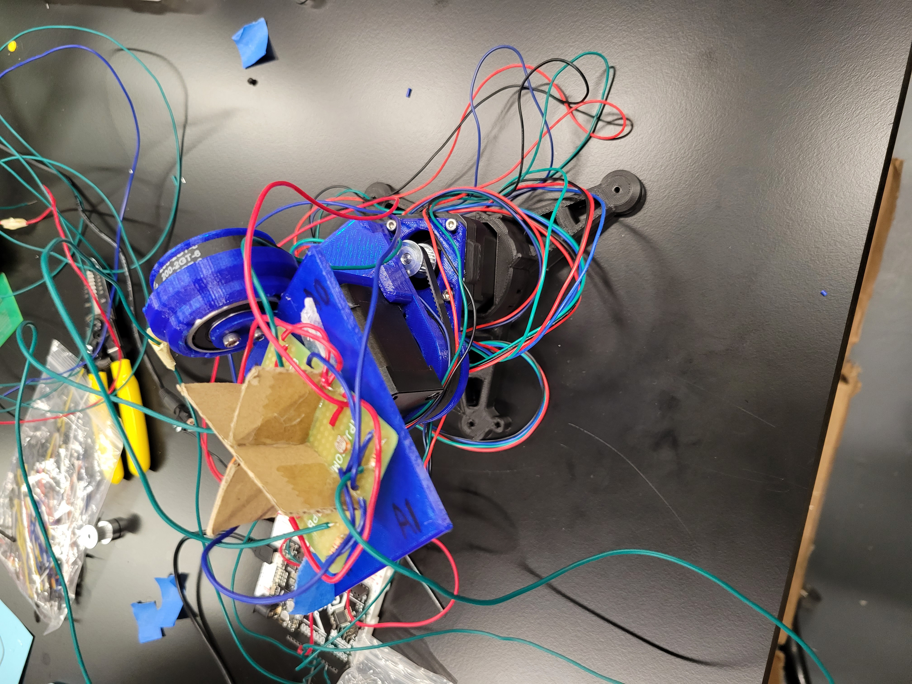

## Week 7
### Monday-Oct 24
On this fabulous Monday, Catherine and I tested out our new soldered circuit that used two of the small PCBs and we hot glued them together. Then, using the edges of a cardboard box, we created a small cruciform (probably around an inch or so in height) and separated out the four quadrants of our new design.
The main issue we ran into today concerned the photoresistors not giving the correct readings when we ran the Arduino code. As a result, we had to, once again, go through and check our soldered connections and ran many continuity tests throughout the entire set-up. We found that the outputted values from the classroom light was around 400 or so and covering the photoresistors with our hands resulted in values around 120 or so.
Basically all of class was dedicated to fixing our board, and I stayed a bit after class with Nathan to fully debug everything. In fact, one of the sensors was affected by another quadrant, which was something that we quickly fixed by re-routing and soldering the wires.
The main thing I learned today was that circuits can get complicated real fast when the connections aren't as solid as you imagine them to be.
### Wednesday-Oct 26
Catherine and I spent the first bit of class making sure that our circuit finally worked properly when it came to the sensors detecting proper changes in our photoresistor outputs.
Finally, we connected our board to the rest of the 3d-printed motor set-up and mounted our PCB to the top of the assembly. We ran into a lot of issues with the movement of the motors. Initially, the motor responsible for the tilting degree of freedom did not appear to move at all, despite the logic for our Arduino motor code suggesting that it should undergo movement.
We eventually found that the breadboard set-up was not giving power to the troubled motor.
Testing it a bit more, we found that the motors were moving around and were not very strong, and Joel helped point out that they were not tightened properly.
After taking out the motors and screwing them in properly, we were finally able to modify our Arduino code to make the set-up orient itself towards the light source and maximize the incident light. The logic set-up with the motorized assembly is what we will continue working on next week.
